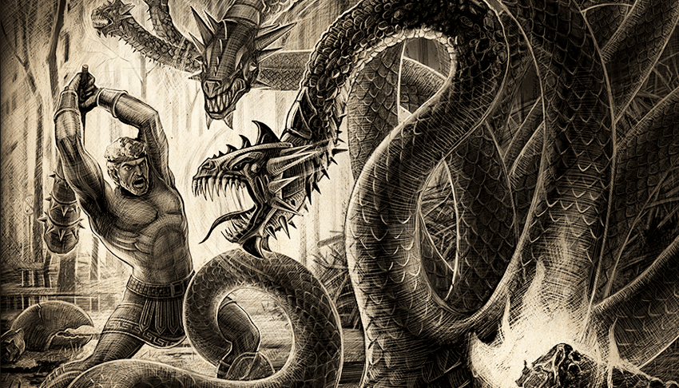
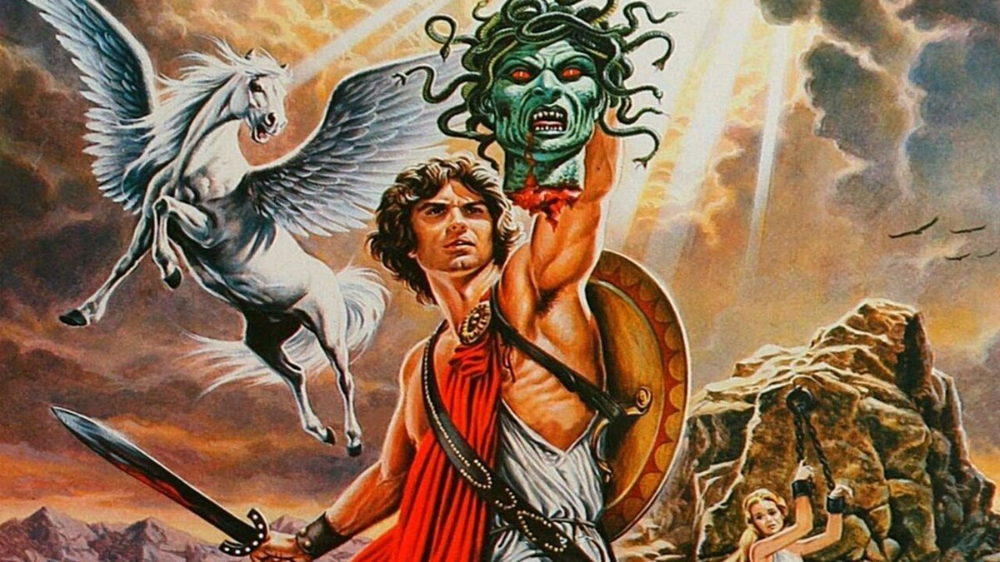
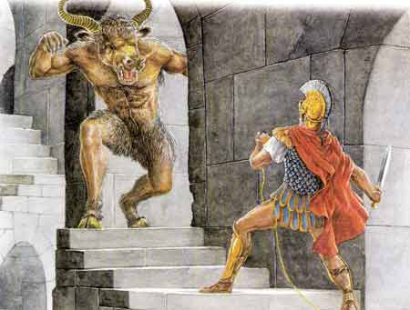
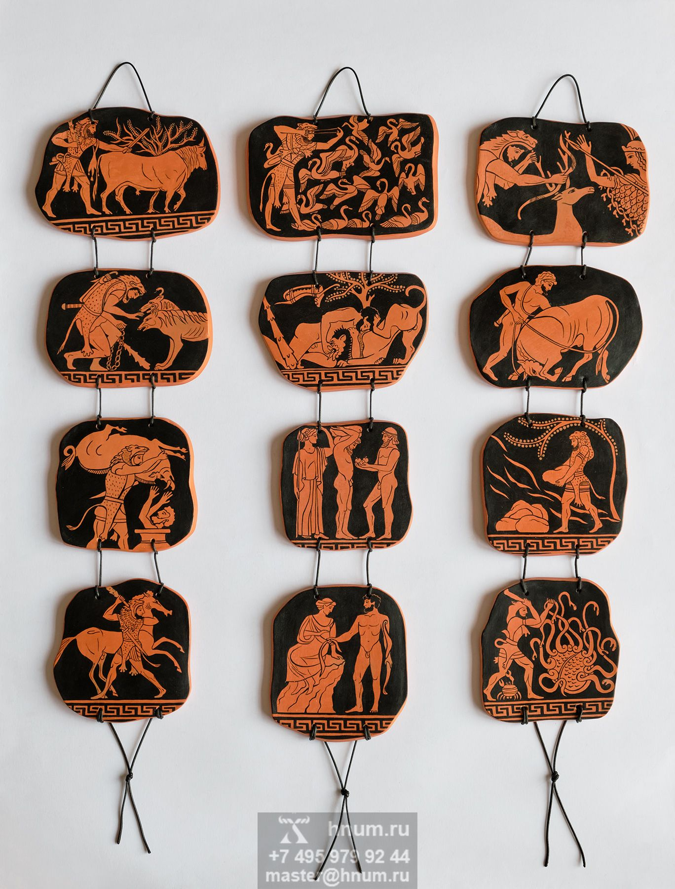
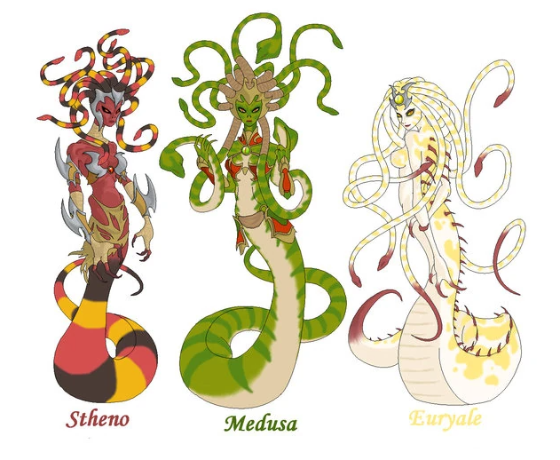
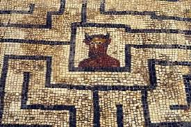
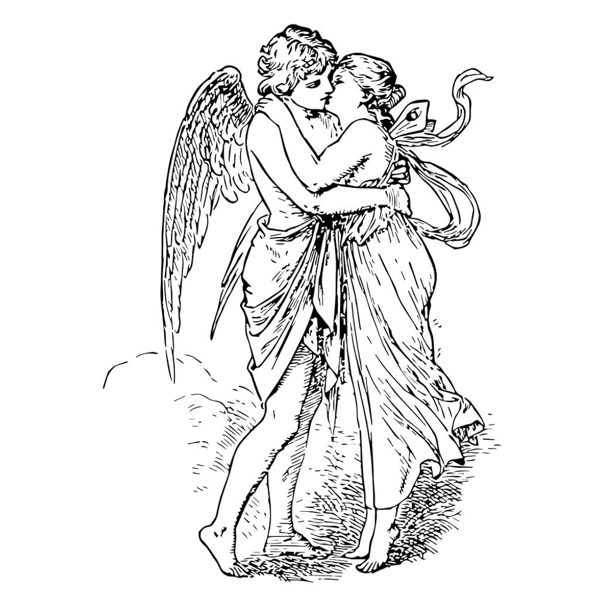

Веб-ресурс предлагает потенциальным клиентам наглядный обзор на мифы древней
Греции. Наша цель -
помочь людям узнать культуру Древней Греции через их мифы и сказания.
Мы предлагаем вам погрузиться в героические подвиги знаменитого
Геракла. Своими глазами вы можете увидеть 12 легендарных побед, котороые прославили его на
долгое время.


Персей
Благодаря этой выставке вы можете лично наблюдать смерть великой
Медузы горгоны и возвышение героя-полубога Персея
Миф о Тесее и Минотавре
Попробуйте самостоятельно пройти пугающий лабиринт Кносского
дворца и
одолейте Минотавра как это сделал герой мифа этого Тесей

Миф об Эросе и Психее
Познакомьтесь с историей любви, напоминающей сказку про красавицу
и чудовище. Величайшей историей любви, которая прошла множество тяжёлых испытаний на пути к
счастью
Отзывы

12 подвигов Геракла
Немейский лев
Лирнейская гидра
Стимфалийские птицы
Киренейская лань
Эриманфский вепрь и битва с кентаврами
Скотный двор царя Авгия
Критский бык
Кони Диомеда
Пояс Ипполиты
Коровы Гериона
Цербер
Яблоки Гесперид
История Медузы горгоны
ГОРГО́НЫ (Γοργώ, Γοργών), в греческой мифологии чудовищные порождения морских божеств Форкия
и
Кето,
внучки земли Геи и моря Понта. Горгоны — три сестры: Сфено, Эвриала и Медуза. Старшие —
бессмертные, младшая (Медуза) — смертная. Горгоны обитают на крайнем западе у берегов реки
Океан,
рядом с граями и Гесперидами. Отличаются ужасным видом: крылатые, покрытые чешуёй, со
змеями
вместо волос, с клыками, со взором, превращающим всё живое в камень. Персей обезглавил спящую
горгону Медузу, глядя в медный щит на её отражение; из крови Медузы появился
крылатый Пегас — плод её связи с Посейдоном. В мифе о горгонах отразилась тема
борьбы олимпийских богов и их героического потомства с хтоническими силами.

История минотавра
Король Минос на Крите попросил белого быка из Посейдона показать свою поддержку его поискам, чтобы
управлять
Критом над его братьями. Вместо того, чтобы жертвовать быком Посейдону, как и предполагалось, он решил
сохранить его вместо этого. Чтобы наказать его за непослушание, Посейдон сделал жену Миноса, королеву
Пасифае, безумно влюблен в быка, а Минотавр стал результатом этого дела.
Тем временем король Минос искал белого быка для собственного развлечения, так как у него было особое
увлечение белыми быками. Афродита послала белого быка,
который был самым великолепным на всей земле, и заставило королеву Пасифая влюбиться в нее.
Минотавр был страшным получеловеком, наполовину бычьего существа, которое любило есть человеческую
плоть.
Его голова была головой быка, тела человека, с копытами и гигантскими черными рогами, которые торчали из
его
головы. По мере того, как он становился старше, он становился настолько страшным, что Минос дал Дедалу
построить ему Лабиринт. Минотавр жил посреди Лабиринта и ел плоть людей, которые оказались в ловушке в
лабиринте.


Миф об Эросе и Психее
Психея стала женой Эроса, но они виделись только по ночам в полной темноте. Ревнивые сёстры Психеи
убедили
её, что Эрос — чудовище, которое нужно убить. Однажды Психея решилась на этот поступок, взяла с собой
масляную лампу и нож и вошла в комнату Эроса, когда тот спал. Осветив его лицо, она увидела
невообразимой
красоты юношу и пролила на Эроса несколько горячих капель масла.
От ожога Эрос проснулся и улетел в гневе к матери, расценив поступок Психеи как предательство. Девушка
бросилась за ним, пытаясь вернуть его, но всё было тщетно. Тогда она взмолилась к Афродите, и богиня
ответила ей, дав три сложных задания, в надежде погубить девушку.
В конце концов Афродиту удалось умиротворить, и Зевс, благословив Психею и Эроса, превратил девушку в
богиню, подарив ей бессмертность. Так влюблённые соединились навеки.